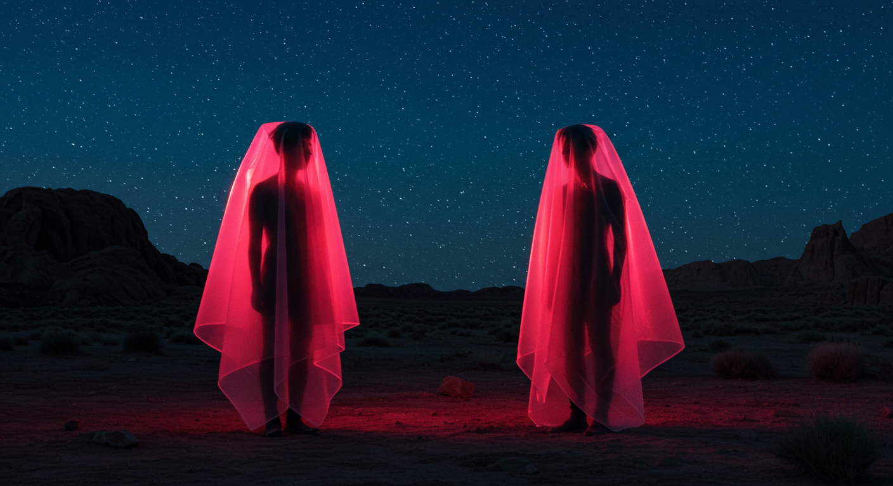

Galería



A 4,000 metros de altura, donde la autenticidad no es elección: es supervivencia. Un viaje visual por la resistencia cultural andina reimaginada.
Explorar proyecto →
Anomalía espacio-temporal donde la realidad se distorsiona y la percepción se fragmenta en un bucle infinito.
Ver video
Como artista digital que explora las fronteras de la creación asistida por IA, combino sensibilidades artísticas tradicionales con tecnología de vanguardia para crear experiencias visuales inmersivas que desafían percepciones y evocan emociones.
Inspirándome tanto en fenómenos naturales como en abstracciones digitales, me esfuerzo por crear piezas que se sientan familiares y ajenas al mismo tiempo, invitando a los espectadores a cuestionar los límites entre la creatividad humana y la innovación tecnológica.
A través de mi portafolio, te invito a viajar por estos reinos digitales: espacios de contemplación, asombro y posibilidad que reflejan nuestra relación en evolución con la tecnología y los horizontes en expansión de la expresión artística.
Isla de Margarita, Venezuela
Disponible en Contra